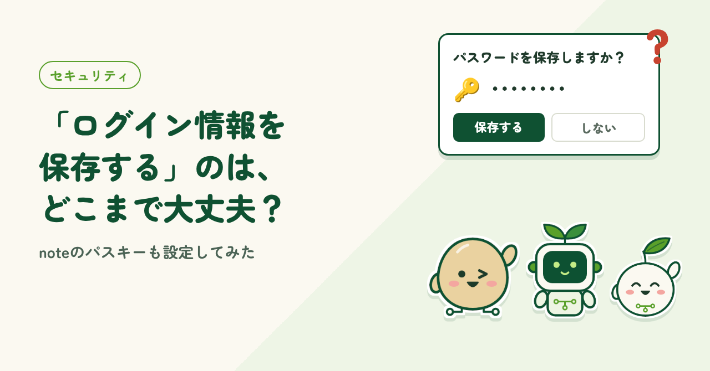
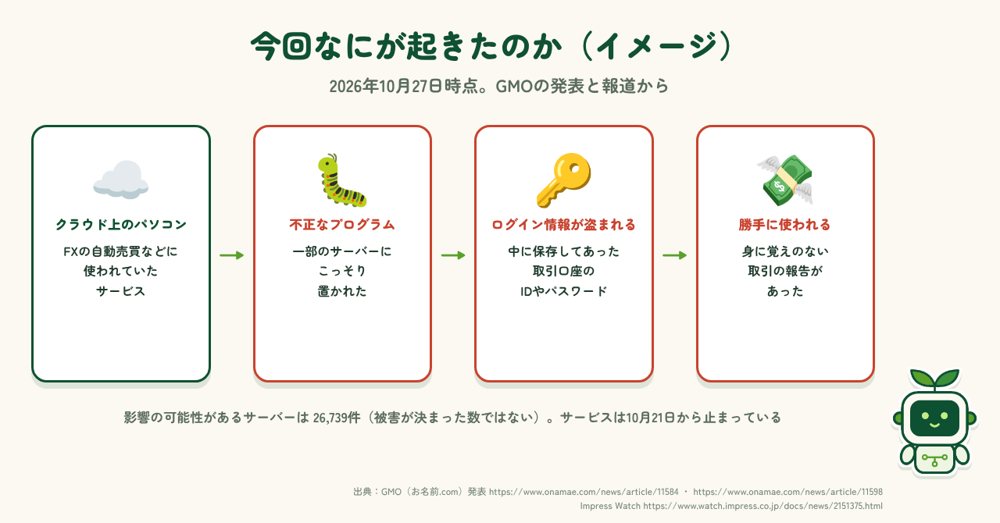
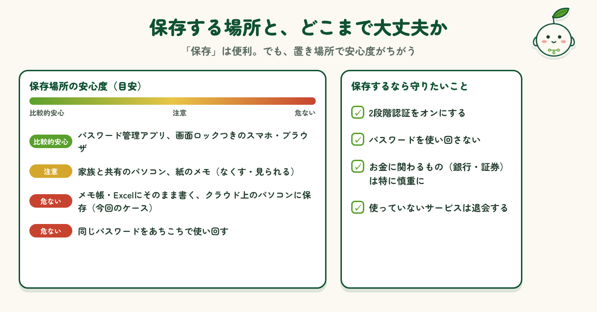
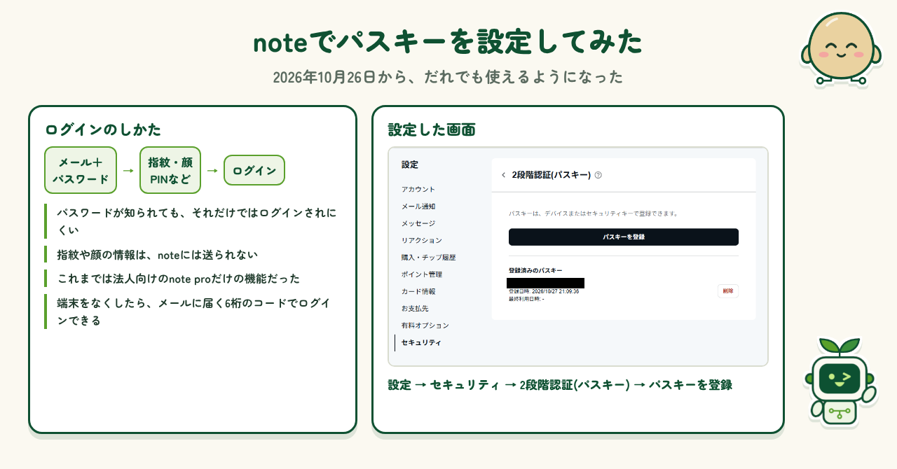

2026.10.27 公開
「ログイン情報を保存する」のは、どこまで大丈夫？
ニュースをきっかけに、ログイン情報の保存はどこまで大丈夫かを考えました。noteでパスキーを設定してみた体験も紹介します。

はじめに
GMOインターネットグループのサービスがサイバー攻撃を受けた、というニュースが話題になっています。盗まれたのは、サーバーの中に保存してあったログイン情報でした。わたし自身も、パソコンやスマホでは、すぐログインできるように、IDやパスワードを保存した状態にしがちです。「パスワードを保存しますか？」と聞かれたら、つい「はい」を押してしまいます。この「保存」は、どこまで大丈夫なのでしょうか。
今回なにが起きたのか
攻撃を受けたのは「お名前.com デスクトップクラウド」という、インターネット上にあるパソコンを借りられるサービスです。FXの自動売買などに使われていました。GMOの発表や報道によると、一部のサーバーに不正なプログラムが置かれ、中に保存してあった取引口座のログイン情報が盗まれました。身に覚えのない取引の報告もあったそうです。影響の可能性があるサーバーは26,739件とされています（10月27日時点）。
参考：

保存する場所と、どこまで大丈夫か
ログイン情報の保存場所は、ブラウザ、スマホ、パスワード管理アプリ、メモ帳やExcel、紙などいろいろです。画面ロックや2段階認証がついたブラウザや管理アプリは、比較的安心です。一方、メモ帳やExcelにそのまま書く、同じパスワードを使い回す、といった使い方は危ないです。保存するなら、2段階認証をオンにする、使い回さない、お金に関わるものは特に慎重にする、を守りたいところです。

noteでパスキーを設定してみた
ちょうど10月26日から、noteでパスキーを使った2段階認証が、だれでも使えるようになりました。これまでは法人向けのnote proだけの機能でした。パスワードを入れたあと、指紋や顔、PINなど、手元の端末で本人確認をするしくみです。さっそく「設定」→「セキュリティ」から設定してみました。「パスキーを登録」を押して端末の案内に進むだけで、数分で終わりました。
参考：note「2段階認証（パスキー）」のお知らせ（10月26日）

まとめ
ログイン情報を保存しておくのは便利ですが、置き場所によっては、まとめて盗まれることもあります。全部をやめる必要はありませんが、保存する場所を選び、2段階認証を組み合わせるだけでも、守りはぐっと固くなります。今回、noteでパスキーを設定してみて、思ったより簡単だと感じました。ニュースをきっかけに、自分がよく使うサービスから、ひとつずつ見直していこうと思います。
制作メモ
段落の構成と文章の下書きはAI（Claude）と作り、各段落に自分の感想を入れて、1段落ずつ確認・修正しました。ニュースの内容は、記事内に載せた発表や報道をもとにしています。